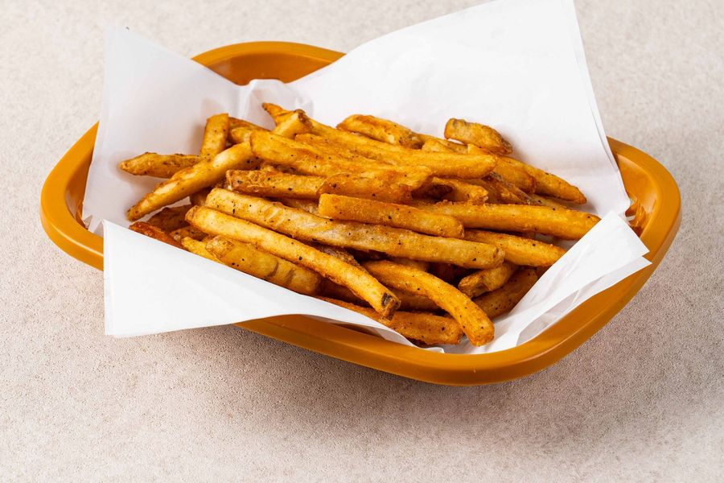

← 메뉴 전체 보기
케이준 감자튀김

케이준 시즈닝으로 맛을 낸 감자튀김 메뉴입니다. 감자에 케이준 시즈닝을 묻혀 바삭하게 튀겨, 소스 없이도 매콤하게 즐기실 수 있습니다.
- 2,000원
들어가는 재료
| 케이준 감자튀김 | 케이준 감자튀김 |
영양성분 (1인분)
| 케이준 감자튀김 | |
|---|---|
| 중량 | 120g |
| 열량 | 374kcal |
| 탄수화물 | 49.2g |
| 당류 | 0.6g |
| 단백질 | 4.1g |
| 지방 | 18.0g |
| 포화지방 | 2.8g |
| 트랜스지방 | 0.0g |
| 콜레스테롤 | 0.0mg |
| 나트륨 | 480.0mg |
매장 배합표와 국가표준식품성분표로 계산한 추정값입니다. 공인 기관 분석값은 아닙니다.
이 메뉴에 들어가는 재료의 원산지
| 재료 | 원산지 |
|---|---|
| 감자 | 인도 |